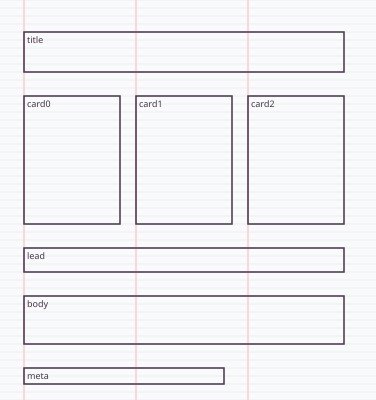
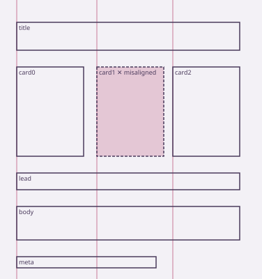

ilghar.studio | grid
Measure the grid
UI grid extractor
Measuredon’t assume
In progressLive function
exact · base 8px · 3 columns
Proof
Exact fixture
8px rhythm, 3 columns — accepted.
Nudge 3px
Exactness refused; card1 labelled misaligned.
Insufficient
Fewer than three elements reports insufficient, never a grid.
Project material


How it works
- Measured coordinates in, candidate base units tested against the evidence.
- Only spacing, column and type-scale tokens the numbers support are exported.
- No default 4/8pt grid is invented when the data cannot carry one.